Recommender systems
Lecture 5 · Jhony H. Giraldo · Télécom Paris, Institut Polytechnique de Paris
Catalogues are enormous and still growing — as of 2026, Spotify’s own company page reports over 100 million tracks, Amazon lists millions of products directly and hundreds of millions across its marketplace, and YouTube and Pinterest count their items in the billions. No user can explore a catalogue of that size, so personalized recommendation — surfacing a handful of interesting items for each individual — is what makes such a platform usable at all.
This note treats recommendation as a graph problem. The data is a bipartite user–item graph; the task is link prediction on it; and the two architectures we study, NGCF and LightGCN, are the machinery of Lectures 2 and 3 applied to that graph. But the interesting part is not the architecture. It is that the metric we care about is not differentiable, and almost everything in the design follows from what we do about that.
1 Learning objectives
After studying this note, you should be able to:
- model a recommender system as a bipartite graph and cast recommendation as link prediction;
- define Recall@$k$ and explain why it cannot be optimized directly;
- show by counterexample why the binary loss is misaligned with Recall@$k$, and how the BPR loss fixes it;
- explain collaborative filtering and why low-dimensional embeddings capture it;
- describe NGCF's message passing over the user–item graph;
- derive LightGCN from a GCN and explain what its multi-scale average does.
2 Recommendation as a graph problem
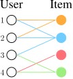
Definition 1 — Notation
\(\mathcal{U}\) is the set of users, \(\mathcal{V}\) the set of items, and
\[ \mathcal{E}=\{(u,v)\ \vert\ u\in\mathcal{U},\ v\in\mathcal{V},\ u \text{ interacted with } v\} \]
the set of observed interactions.
The bipartite view is a good first model, not the whole story: real systems also carry knowledge graphs over the items, user attributes, session structure, and time. But it is enough to state the task.
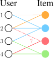
For every pair \(u\in\mathcal{U}\), \(v\in\mathcal{V}\) we need a real-valued score \(f(u,v)\), and we recommend the highest-scoring items the user has not already seen.
2.1 Top-\(k\) recommendation
For a recommendation to be useful, \(k\) must be far smaller than the catalogue — typically \(10\) to \(100\) against up to billions of items. The goal is to fit as many positive items (items the user will actually interact with in the future) as possible into that short list.
2.2 Recall@\(k\)
Definition 2 — Recall@\(k\)
For each user \(u\), let \(P_u\) be the set of positive items the user will interact with in the future and \(R_u\) the set of items the model recommends, with \(|R_u|=k\) and items already interacted with excluded. Then
\[ \text{Recall@}k(u)=\frac{|P_u\cap R_u|}{|P_u|}, \]
and the reported figure is the average over all users.
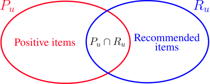
Check 1 — Recall@\(k\) is personalized
Read the definition again: it is computed per user and only then averaged. Nothing in it compares one user’s scores against another’s. That sounds like a technicality; Section 4 shows it is the single most consequential fact in the lecture.
2.3 How a deployed system is actually built
We cannot evaluate \(f(u,v)\) for every pair: \(|\mathcal{U}|\times|\mathcal{V}|\) is astronomically large. Production systems therefore split the work in two.
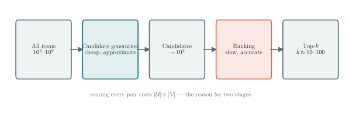
Everything in this note concerns the embeddings that make the first stage possible.
2.4 A word about what these systems optimize
Check 2 — Societal risk is a consequence of the objective
How many times have you opened TikTok, Instagram, or YouTube “just for five minutes” and lost half an hour?
That is not an accident, and the objective functions in this note are part of the reason. Recommender systems are typically trained on engagement — clicks, watch time, interactions — and Recall@\(k\) rewards showing users what they are most likely to interact with.
The risk is a feedback loop, and it is worth stating as a mechanism rather than a theorem. The model is trained on interactions that the previous model’s recommendations helped produce. If it surfaces a kind of content, engagement with that content rises, the next training set reflects that, and the pattern can reinforce itself. Whether it does depends on the candidate generation, the exploration policy, the re-ranking and diversity constraints on top, and what “engagement” was defined to mean. Recall@\(k\) alone does not imply harmful amplification; it removes any pressure against it.
Going further is outside this course, but there are active research communities on fairness, diversity, filter bubbles, and engagement-versus-wellbeing objectives. Know that the metric you optimize is a choice, and that this one has consequences.
3 Embedding-based models
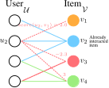
Definition 3 — Embedding-based model
Give every user \(u\) an embedding \(\mathbf{u}\in\mathbb{R}^{D}\) and every item \(v\) an embedding \(\mathbf{v}\in\mathbb{R}^{D}\), and let \(F_{\theta}:\mathbb{R}^{D}\times\mathbb{R}^{D}\to\mathbb{R}\) be a parameterized function. Then
\[ \operatorname{score}(u,v):=F_{\theta}(\mathbf{u},\mathbf{v}). \]
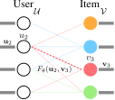
The training objective is to achieve high Recall@\(k\) on the observed interactions, in the hope that this transfers to the unseen ones.
4 Surrogate losses
Here is the problem. Recall@\(k\) is not differentiable. It depends on the model only through a sort and a set intersection, both piecewise constant, so its gradient is zero wherever it exists. Gradient-based optimization has nothing to work with.
We therefore need a surrogate: a differentiable loss that is aligned with the metric we actually want. Two are standard.
4.1 The binary loss
Definition 4 — Binary loss
Let \(\mathcal{E}\) be the observed (positive) edges and
\[ \mathcal{E}_{\text{neg}}=\{(u,v)\ \vert\ (u,v)\notin\mathcal{E},\ u\in\mathcal{U},\ v\in\mathcal{V}\} \]
the candidate negatives. That name matters: an unobserved pair is one the user has not interacted with, which is overwhelmingly because they never saw it. Treating it as an established dislike is a modelling assumption, and a strong one — it is why the sampling distribution for negatives is itself a design choice. The binary loss classifies edges as positive or negative using \(\sigma(F_\theta(\mathbf{u},\mathbf{v}))\):
\[ -\frac{1}{|\mathcal{E}|}\sum_{(u,v)\in\mathcal{E}}\log\sigma\!\left(F_\theta(\mathbf{u},\mathbf{v})\right) -\frac{1}{|\mathcal{E}_{\text{neg}}|}\sum_{(u,v)\in\mathcal{E}_{\text{neg}}}\log\!\left(1-\sigma\!\left(F_\theta(\mathbf{u},\mathbf{v})\right)\right). \]
This pushes positive-edge scores up and negative-edge scores down, which sounds exactly right — positives are what we want recalled. But note what kind of loss it is: pointwise. Each term depends on the score of one pair alone, and asks that \(\sigma(F_\theta)\) be a calibrated probability of interaction. That is a different request from “rank this user’s items well”.
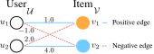
Work the numbers through, because the reason for the penalty is easy to get wrong:
| pair | label | score | \(\sigma(\text{score})\) | BCE term |
|---|---|---|---|---|
| \((u_1,v_1)\) | positive | \(1.0\) | \(0.731\) | \(0.313\) |
| \((u_1,v_2)\) | negative | \(-1.0\) | \(0.269\) | \(0.313\) |
| \((u_2,v_1)\) | negative | \(2.0\) | \(0.881\) | \(\mathbf{2.127}\) |
| \((u_2,v_2)\) | positive | \(4.0\) | \(0.982\) | \(0.018\) |
Check 3 — Read the counterexample carefully
The model in Figure 7 is perfect by the metric we care about, and the loss punishes it anyway. But the reason is not that the loss compares \((u_2,v_1)\) against \((u_1,v_1)\) — it never does. Binary cross-entropy is pointwise; no term in it involves two users.
The \(2.127\) appears because \(\sigma(2.0)=0.881\) declares that pair 88% likely to be positive while its label is negative. The loss is doing exactly its job: fitting probabilities. It is our objective that is different.
The real mismatch is an invariance. Add a constant to every score of one user and Recall@\(k\) does not change at all — the within-user ordering is untouched. Do the same to the binary loss and it changes, because each score is being read as an absolute probability. A loss that is not invariant to something the metric is invariant to will spend capacity on a distinction the metric never rewards.
So the lesson is not “BCE is non-personalized”. It is: probability calibration and within-user ranking are different objectives, and a top-\(k\) ranking metric asks only for the second.
4.2 The BPR loss
What we want instead: for each user separately, positive scores above that same user’s negative scores. Score ordering across users is irrelevant.
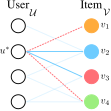
Definition 5 — Bayesian Personalized Ranking loss
For a user \(u^*\), with rooted positive edges \(\mathcal{E}(u^*)=\{(u^*,v)\in\mathcal{E}\}\) and rooted negative edges \(\mathcal{E}_{\text{neg}}(u^*)=\{(u^*,v)\in\mathcal{E}_{\text{neg}}\}\),
\[ \begin{aligned} \text{Loss}(u^*)=\frac{1}{|\mathcal{E}(u^*)|\,|\mathcal{E}_{\text{neg}}(u^*)|} &\sum_{(u^*,v_{\text{pos}})\in\mathcal{E}(u^*)}\ \ \sum_{(u^*,v_{\text{neg}})\in\mathcal{E}_{\text{neg}}(u^*)}\\[4pt] &\quad -\log\sigma\!\left(F_\theta(u^*,v_{\text{pos}})-F_\theta(u^*,v_{\text{neg}})\right), \end{aligned} \tag{1}\]
and the total loss is \(\frac{1}{|\mathcal{U}|}\sum_{u^*\in\mathcal{U}}\text{Loss}(u^*)\).
The whole design is in the difference \(F_\theta(u^*,v_{\text{pos}})-F_\theta(u^*,v_{\text{neg}})\) (Rendle et al. 2009). Only scores belonging to the same user are ever compared, so the loss is invariant to shifting one user’s scores up or down — precisely the invariance we just found Recall@\(k\) has and the binary loss lacks. Applied to Figure 7, both users have margin \(2.0\) and the loss is small and equal for each.
Check 4 — BPR is a better surrogate, not the metric
Sharing one invariance does not make two objectives the same, and it is worth being precise about the gap.
On Figure 7 the BPR loss is \(-\log\sigma(2.0)=0.127\) per user — small, but not zero, and with a nonzero gradient. BPR keeps pushing an already-correctly-ordered pair toward a larger margin; Recall@\(k\) stopped caring the moment the ordering was right.
It also differs in where in the ranking it looks. Recall@\(k\) only sees the top \(k\): promoting an item from rank 900 to rank 400 changes nothing. BPR treats every positive–negative pair alike, so it will happily spend gradient on that move. Losses that weight the head of the ranking more heavily (WARP, LambdaRank) exist for exactly this reason.
BPR is the right default here because it is differentiable, cheap to sample, and shares the invariance that matters. It is a surrogate, not a reformulation of the metric.
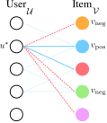
The double sum in Equation 1 is far too large to evaluate exactly, so it is estimated:
\[ \frac{1}{|\mathcal{U}_{\text{mini}}|}\sum_{u^*\in\mathcal{U}_{\text{mini}}} \frac{1}{|\mathcal{V}_{\text{neg}}|}\sum_{v_{\text{neg}}\in\mathcal{V}_{\text{neg}}} -\log\sigma\!\left(F_\theta(u^*,v_{\text{pos}})-F_\theta(u^*,v_{\text{neg}})\right). \]
5 Why embeddings work at all
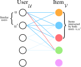
The mechanism is a capacity argument, and it is worth stating precisely.
Check 5 — Low dimension is a feature, not a limitation
A \(D\)-dimensional embedding table has \(O((|\mathcal{U}|+|\mathcal{V}|)D)\) parameters, whereas the interaction matrix has \(|\mathcal{U}|\times|\mathcal{V}|\) entries. Since the score matrix \(\mathbf{U}\mathbf{V}^{\top}\) has rank at most \(D\), the model cannot represent an arbitrary interaction pattern.
Being unable to represent everything, it is pushed toward explaining the data with structure it can represent — placing similar users near each other and similar items near each other. That compression is the mechanism behind collaborative filtering, and it is what lets the model say anything about a pair it has never observed.
Two honest caveats. A rank constraint on the full matrix does not mean the observed entries cannot be fit closely: interaction data is extremely sparse, and a low-rank model can often fit a sparse set of observations well while generalizing poorly. And low rank alone does not make the learned geometry meaningful — regularization, the negative-sampling distribution, data density, and the evaluation protocol all matter. Low dimension creates the pressure; it does not guarantee the result.
6 Neural graph collaborative filtering
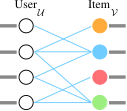
Check 6 — What shallow encoders miss
The graph enters a shallow model only through the training objective — through which pairs are positive. It never enters the model itself.
And the objective only ever looks at first-order structure: individual edges. A \(K\)-hop path between a user and an item — the very thing that says “people like you, who liked things like this, went on to like that” — is never represented.
This echoes Lecture 2’s complaint about shallow encoders, though the two are not identical: DeepWalk’s random-walk contexts do reach beyond immediate edges, whereas the loss here looks only at observed pairs.
We want a model that captures graph structure explicitly and at higher order. GNNs do both.
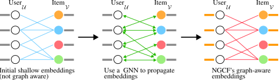
Definition 6 — Generic bipartite message passing
With shallow embeddings as the initial features, \(\mathbf{h}_u^{(0)}\) and \(\mathbf{h}_v^{(0)}\), iterate
\[ \mathbf{h}_v^{(k+1)}=\operatorname{COMBINE}\!\left(\mathbf{h}_v^{(k)},\ \operatorname{AGGR}\!\left(\left\{\mathbf{h}_u^{(k)}\right\}_{u\in\mathcal{N}(v)}\right)\right), \] \[ \mathbf{h}_u^{(k+1)}=\operatorname{COMBINE}\!\left(\mathbf{h}_u^{(k)},\ \operatorname{AGGR}\!\left(\left\{\mathbf{h}_v^{(k)}\right\}_{v\in\mathcal{N}(u)}\right)\right), \]
with, say, \(\operatorname{AGGR}=\operatorname{MEAN}\) and \(\operatorname{COMBINE}(\mathbf{x},\mathbf{y})=\operatorname{ReLU}(\operatorname{Linear}(\operatorname{Concat}(\mathbf{x},\mathbf{y})))\).
This is the general shape of a graph recommender, and it is what to keep in mind. It is not yet NGCF.
Definition 7 — NGCF, as actually specified
NGCF (Wang et al. 2019) fixes two things that Definition 6 leaves open, and both matter.
The message carries an interaction term. The message from item \(v\) to user \(u\) is not the neighbor’s state but
\[ \mathbf{m}_{u\leftarrow v}=\frac{1}{\sqrt{|\mathcal{N}(u)|\,|\mathcal{N}(v)|}} \Big(\mathbf{W}_1\mathbf{h}_v^{(k)}+\mathbf{W}_2\big(\mathbf{h}_v^{(k)}\odot\mathbf{h}_u^{(k)}\big)\Big), \]
where \(\odot\) is the elementwise product. The second term is the point of the model: it makes the message depend on how well the user and item already agree, which a mean aggregation cannot express. There is also a self-message \(\mathbf{m}_{u\leftarrow u}=\mathbf{W}_1\mathbf{h}_u^{(k)}\), and the update is
\[ \mathbf{h}_u^{(k+1)}=\operatorname{LeakyReLU}\Big(\mathbf{m}_{u\leftarrow u}+\textstyle\sum_{v\in\mathcal{N}(u)}\mathbf{m}_{u\leftarrow v}\Big). \]
The readout concatenates every depth. The final embedding is not \(\mathbf{h}_u^{(K)}\) but
\[ \mathbf{h}_u^{*}=\mathbf{h}_u^{(0)}\,\Vert\,\mathbf{h}_u^{(1)}\,\Vert\cdots\Vert\,\mathbf{h}_u^{(K)}, \]
so information from every hop count reaches the score. Keep this in view: LightGCN will replace the concatenation with a weighted average, and drop everything else.
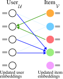
After \(K\) rounds we set \(\mathbf{u}\leftarrow\mathbf{h}_u^{*}\) and \(\mathbf{v}\leftarrow\mathbf{h}_v^{*}\) — the concatenations over all depths — and score by inner product.
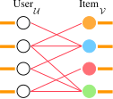
7 LightGCN
Check 7 — Count the parameters before adding machinery
NGCF learns shallow embeddings and GNN weights. Compare their sizes:
| parameters | |
|---|---|
| shallow embeddings | \(O(ND)\) |
| GNN weights | \(O(D^{2})\) |
With \(N\) (users plus items) in the millions and \(D\) in the tens, \(ND \ggg D^{2}\). Essentially all the capacity is already in the shallow embeddings. So it is worth asking whether the GNN’s own parameters are earning their place.
They are not — and removing them improves performance (He et al. 2020).
7.1 The bipartite adjacency
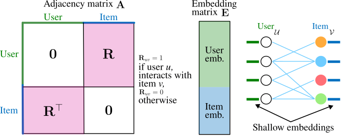
7.2 Deriving the model
Take the GCN formulation, but omit the self-loops — a bipartite graph has no same-type edges to preserve — and normalize as \(\tilde{\mathbf{A}}=\mathbf{D}^{-1/2}\mathbf{A}\mathbf{D}^{-1/2}\). A layer is then
\[ \mathbf{E}^{(k+1)}=\operatorname{ReLU}\!\left(\tilde{\mathbf{A}}\mathbf{E}^{(k)}\mathbf{W}^{(k)}\right). \]
Now apply Lecture 3’s argument verbatim. Remove the nonlinearities and the stack collapses, exactly as it did for SGC:
\[ \mathbf{E}^{(k)}=\tilde{\mathbf{A}}^{k}\mathbf{E}\mathbf{W}. \]
LightGCN goes one step further and drops the linear projection too:
\[ \mathbf{E}^{(k)}=\tilde{\mathbf{A}}^{k}\mathbf{E}. \tag{2}\]

7.3 Multi-scale diffusion
Here LightGCN differs from SGC in one important respect. Rather than using the embedding at a single depth, it averages across all depths:
\[ \mathbf{E}_{\text{final}}=\alpha_0\mathbf{E}^{(0)}+\alpha_1\mathbf{E}^{(1)}+\cdots+\alpha_k\mathbf{E}^{(k)}, \qquad \mathbf{E}^{(0)}=\tilde{\mathbf{A}}^{0}\mathbf{E}=\mathbf{E}. \tag{3}\]
The coefficients are hyperparameters; LightGCN simply takes them uniform, \(\alpha_i=\frac{1}{k+1}\).
Check 8 — Why average across scales?
Keeping \(\mathbf{E}^{(0)}\) in the sum means the un-diffused embedding always survives with weight \(\frac{1}{k+1}\). This is a structural defence against the failure mode of Lecture 2: however much the deep terms smooth, the model retains a path back to the node’s own identity.
It is the same idea as a residual connection. But note the weight: \(\frac{1}{k+1}\) shrinks as \(k\) grows, so this mitigates over-smoothing rather than preventing it. At large \(k\) the un-diffused term is a vanishing share of the sum.
Check 9 — LightGCN is not SGC on a bipartite graph
The resemblance is real — both delete the nonlinearity and the projection — but one difference changes the engineering completely.
SGC’s \(\tilde{\mathbf{X}}=\hat{\mathbf{A}}^{\ell}\mathbf{X}\) is computed from fixed input features, so it is preprocessing: compute once, then train an ordinary classifier on the rows. In LightGCN the input \(\mathbf{E}\) is the parameter being learned. Every gradient step changes it, so the diffusion must be recomputed on every forward pass and differentiated through on every backward pass. There is no one-time preprocessing to be had.
Two more differences worth noting: LightGCN averages over all depths where SGC uses a single depth, and LightGCN omits self-loops. The self-loop omission is not simply because the graph is bipartite — it is because the layer combination of Equation 3 already retains \(\mathbf{E}^{(0)}\), so a self-loop inside each propagation would be redundant with it.
7.4 The model end to end
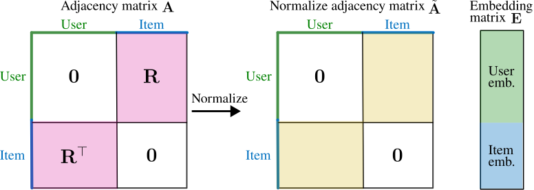
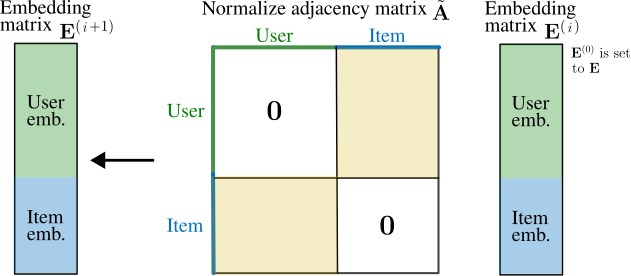
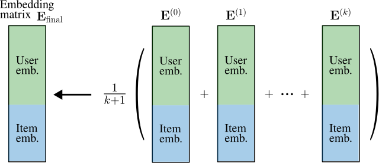
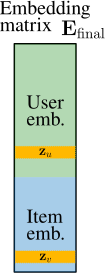
The only learnable parameters are the input embeddings \(\mathbf{E}\). Everything else is a fixed sparse matrix product.
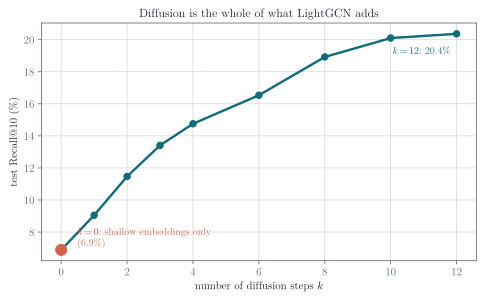
Check 10 — What Figure 20 does and does not show
It shows the central claim: diffusion is the whole of what LightGCN adds over a shallow encoder, and it is worth a large factor. The \(k=0\) point is a shallow model trained identically, so the gap is attributable to the propagation alone.
It does not show a turning point. In this small, clean, strongly homophilous synthetic graph, recall was still improving at the largest depth tested — the multi-scale average of Equation 3 is doing its job. On real data, and without that average, more layers eventually hurt for the reasons Lecture 2 measured.
And it is one experiment, so treat it accordingly: one random interaction split, one seed, and the same hyperparameters at every depth, on synthetic data whose group structure was built in by construction. There is no validation-selected setting, no popularity baseline, and no matrix-factorization baseline to compare against. It is evidence that the diffusion is where the value is in this setup — not a general ranking of models. Exercise 6 asks you to look for the turnover, and Exercise 8 to add the missing baselines.
Check 11 — Why the simple thing works
The diffusion directly pulls together the embeddings of users who share many item neighbors. Two users who interacted with many of the same items get similar final embeddings, and therefore similar recommendations.
That is a mechanical restatement of collaborative filtering — the assumption we started from. LightGCN works because its inductive bias is the assumption of the problem, and it needs no parameters to express it.
Check 12 — NGCF, LightGCN, and shallow encoders
| learnable parameters | graph in the model | cost | |
|---|---|---|---|
| Shallow encoder | embeddings | no — only via the loss | cheapest |
| NGCF | embeddings and GNN weights | yes, high-order | highest |
| LightGCN | embeddings only | yes, high-order | embeddings plus \(k\) sparse products |
All three learn one embedding per user and item. The difference is that LightGCN scores with the diffused embeddings, which costs more than a shallow encoder and consistently performs better — while beating NGCF by having fewer moving parts.
8 Exercises
8.1 Exercise 1 — Recall@\(k\) by hand
A user has \(P_u=\{v_3,v_7,v_9,v_{11}\}\) and the model returns \(R_u=\{v_2,v_3,v_5,v_9,v_{12}\}\). Compute Recall@5. Then state what Recall@\(k\) does when \(k>|P_u|\), and why practitioners also report Precision@\(k\) and NDCG@\(k\).
8.2 Exercise 2 — The counterexample, generalized
Figure 7 uses two users and two items. Construct a family of examples with \(n\) users in which Recall@1 is perfect but the binary loss is arbitrarily large. You are not exploiting a comparison across users — the loss makes none — so say precisely which property of the individual scores you are exploiting, and why Recall@\(k\) is blind to it.
8.3 Exercise 3 — Invariance
Show that the BPR loss of Equation 1 is unchanged if every score of one user is shifted by a constant, \(F_\theta(u^*,v)\mapsto F_\theta(u^*,v)+c_{u^*}\), and that the binary loss is not. Relate this to Check 1.
8.4 Exercise 4 — Gradient of the BPR loss
With \(F_\theta(u,v)=\langle\mathbf{u},\mathbf{v}\rangle\), differentiate a single BPR term with respect to \(\mathbf{u}\), \(\mathbf{v}_{\text{pos}}\) and \(\mathbf{v}_{\text{neg}}\). Show that the update magnitude shrinks as the positive already outranks the negative, and say why that is desirable.
8.5 Exercise 5 — The collapse
Verify Equation 2 for \(k=2\): expand \(\mathbf{E}^{(2)}\) with the ReLU present and again with it removed, and identify the step that fails when it is present. Compare with the SGC derivation in Lecture 3 — what does LightGCN remove that SGC keeps?
8.6 Exercise 6 — Diffusion depth
Reproduce Figure 20 with scripts/figures/lecture_05_figures.py. Then remove the multi-scale average — score with \(\mathbf{E}^{(k)}\) alone instead of the average of Equation 3 — and re-run the sweep. Does a turning point appear? Explain the result using Check 8.
8.7 Exercise 7 — Parameter counts
A platform has \(10^{7}\) users, \(10^{6}\) items and \(D=64\). Count the parameters of a shallow encoder, of LightGCN, and of NGCF with a 3-layer GNN. Then state which of the three you would deploy first, and why the answer does not follow from the parameter count alone.
8.8 Exercise 8 — The missing baselines (investigation)
Figure 20 compares LightGCN against itself at \(k=0\). That is not enough to conclude the model is good. Extend scripts/figures/lecture_05_figures.py with two baselines: most-popular (rank every user’s candidates by global interaction count, ignoring the user) and matrix factorization (the \(k=0\) model, but with its own tuned dimension and regularization). Re-run over five seeds and report the mean and spread of Recall@10.
Does LightGCN still win? By how much, relative to the seed-to-seed spread? Which baseline is harder to beat, and what does that tell you about how much of the signal is popularity rather than personalization?
9 Main takeaways
- A recommender system is a bipartite user–item graph, and recommendation is link prediction on it.
- We recommend \(k \ll |\mathcal{V}|\) items and evaluate with Recall@\(k\), which is defined per user and then averaged.
- Recall@\(k\) is not differentiable, so training uses a surrogate loss — and the choice of surrogate is where the alignment with the metric is won or lost.
- The binary loss is pointwise: it fits calibrated probabilities. A two-user counterexample shows it penalizing a model with perfect Recall@1 — not because it compares users, but because probability calibration and ranking are different objectives.
- The BPR loss compares items only within a user, so it shares Recall@\(k\)’s invariance to per-user score shifts. It is a better surrogate, not the metric: it still rewards larger margins on pairs that are already correctly ordered, and it weights the whole ranking rather than the top \(k\).
- Embeddings work because they are too small to memorize, which forces them to encode user and item similarity — collaborative filtering.
- NGCF propagates shallow embeddings over the bipartite graph with a GNN, capturing high-order structure the training objective alone cannot.
- LightGCN removes the GNN’s parameters entirely, keeping only diffusion plus a multi-scale average. It has fewer parameters than NGCF and performs better — and the multi-scale average is what keeps depth safe.
References and provenance
This web note is adapted from the Lecture 5 slides by Jhony H. Giraldo. The binary-loss counterexample is analyzed as a proof of misalignment rather than an anecdote, the LightGCN derivation is connected explicitly to Lecture 3’s SGC collapse, and the role of the multi-scale average is drawn out.
The diagrams reproduce the original course vectors. Figure 4 and Figure 20 are new: the first is redrawn, and the second is a measurement produced by scripts/figures/lecture_05_figures.py in this repository, which trains a LightGCN end to end with numpy.